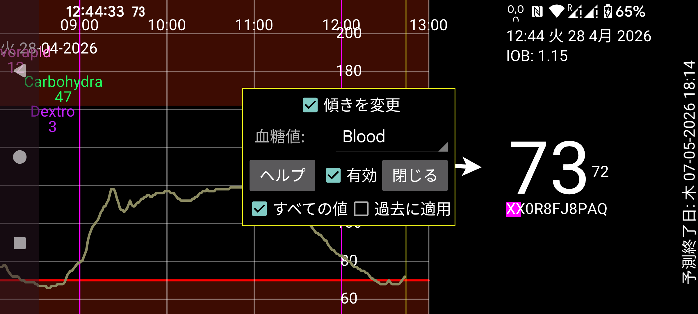

ar de es hi it ja ko nl ru uk uz en
Juggluco 10.0.0 以降は、センサーを校正する機能を備えています。
血糖値: 指先穿刺による血糖測定を表すラベルを指定します。これにより、そのラベルで入力されたすべての血糖値が校正に使用されます。ただし、左中メニュー → 新規記録で「除外」をチェックして入力した血糖値は校正に使用されません。変化率が(絶対的に)大きすぎる場合は自動的に除外されます。
血糖値が安定していないため校正に適さない値のみを除外する必要があります。センサーを校正する必要がないと考えても、他のすべての値は除外しないでください。校正したくない場合は、「有効」を解除し、右中メニューでストリーム、スキャン、履歴の前の ✓ を解除し、それらの後の [x] を設定してください。これにより、一致しない値だけでなく、適切なすべての血糖値が校正に使用されます。
除外されていない新しい指先穿刺ごとに新しい校正が行われます。行われた校正は、センサー情報画面で「校正」を押すと確認できます。センサー情報には、血糖曲線を長押しするか、左メニュー → センサーから入れます。(校正は特定のセンサー固有のものです。)
「過去に適用」が設定されていない場合、血糖値はその血糖値の前の最新の校正で校正されます。「過去に適用」が設定されている場合、最新の校正がこのセンサーのすべての血糖値に適用されます。
傾きを変更:
「傾きを変更」が設定されていない場合、校正済み血糖値を得るためにすべてのセンサー血糖値に一定の値が加算または減算されるだけです。校正値とセンサー値の関係は次のとおりです:
校正済み血糖値 = センサー血糖値 + b
b の値は校正によって決定されます。この設定を使う場合は、高い血糖値で校正してはいけません。導出された b の値は低い血糖値に対して大きすぎてしまうためです。高値での校正もあまり意味がありません。高値と非常に高い値の差はそれほど重要ではないからです。
「傾きを変更」が設定されている場合、関係は次のようになります:
校正済み血糖値 = a × センサー血糖値 + b
このとき a は 1 と異なる値になり得ます。多様な校正があることが重要です。例えば、すべての血糖測定が血糖値 90 mg/dL (5 mmol/L) 付近で行われ、センサー値が 54 mg/dL から 180 mg/dL (3 mmol/L から 10 mmol/L) に分布している場合、これらの値は a の値を推定するのに十分多様ではありません。
Juggluco は血糖測定値をその古さに応じて重み付けします。現在の血糖値の重みは 1 で、古い血糖値の重みは小さくなります。校正も重み付けされ、古い校正の影響は小さくなります。これにより、a は時間とともに 1 に、b は時間とともに 0 に近づきます。
使用された血糖測定値の合計重みが、校正にどれだけの重みが与えられるかを決定します。最近の血糖測定値が多いほど、校正済み血糖値はこれらの測定値から推定された血糖値と CGM (持続血糖モニタリング) 血糖値の最良適合に近くなります。
履歴値は瞬時には校正できません。値の校正は Libre センサーでは 21 分後、CareSens Air センサーでは 31 分後に実行されるよう設定されていますが、それより遅くなることが多いです。また、ストリーム校正は次の CGM 値が利用できるように後で繰り返されます。
有効:
有効が設定されている場合、校正済み血糖値はアラーム、ブロードキャスト、Health Connect、Juggluco の Nightscout/xDrip Web サーバー、ウォッチへの送信血糖値、フローティング血糖に使用されます。Juggluco の右側には校正済み値が大きなフォントで表示され、その後に未校正値が小さなフォントで表示されます。Libreview への送信には決して使用されません。
校正済み血糖値の曲線の表示は、右中メニューの「ストリーム」と「履歴」の前のスイッチでオン/オフを切り替えます。生の値は「ストリーム」と「履歴」の後のチェックボックスでオン/オフを切り替えます。
すべての値: 一部の値には校正済み値がありません。「すべての値」がチェックされていない場合、校正済み値の曲線には何も表示されません。「すべての値」がチェックされている場合、未校正値が表示されます。これにより、右中メニュー → ストリームで生の値をオフにしても、すべての値を見られます。